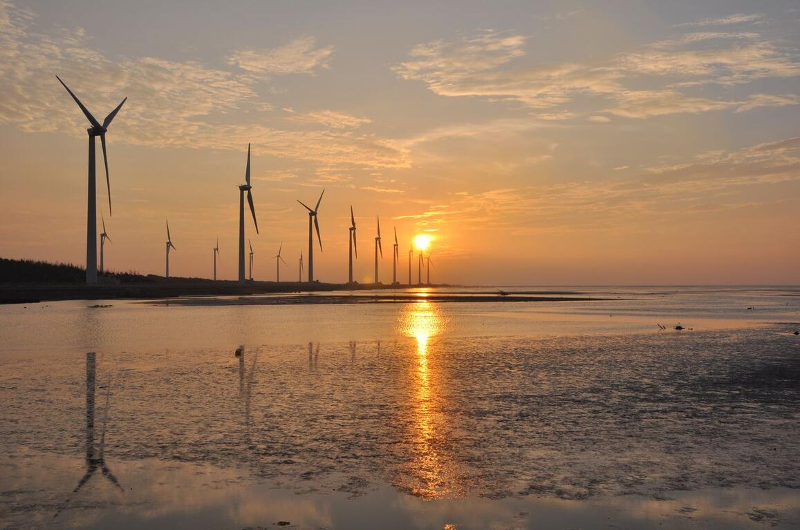

💾 基本簡介
高美濕地前身為高美海水浴場，隨著臺中港築港工程導致泥沙淤積，逐漸轉化為兼具泥質與沙質的潮間帶濕地。2004 年由臺中市政府公告設立為「高美野生動物保護區」，擁有豐富的雲林莞草區及多樣化的底棲生物（如招潮蟹、彈塗魚），每年秋冬更有大量候鳥在此避寒過境，是極為珍貴的生態教育場所。
- 📍 地點：臺中市清水區，大甲溪出海口南側
- 📅 成立時間：2004年公告為高美野生動物保護區
- 📐 規模：約700多公頃（含保護區核心與緩衝區）
- 🌅 主要特色：絕美夕陽、沿海風車群、棲地木棧道、豐富潮間帶生態
📊 景點SWOT 分析
針對高美濕地目前在觀光發展與環境保育上的現況，進行 SWOT 現狀評估分析如下：
| SWOT 構面 | 內容說明與影響分析 |
|---|---|
| S 優勢 (Strengths) | 景觀辨識度極高（夕陽與風車）、生態資源豐富、國內外知名度高。 |
| W 劣勢 (Weaknesses) | 極受天候與潮汐影響；假日人潮壅塞，且大眾運輸班次較為有限。 |
| O 機會 (Opportunities) | 短影音自媒體行銷、推廣深度生態旅遊與環境教育、串聯海線觀光廊道。 |
| T 威脅 (Threats) | 過度觀光可能造成生態環境破壞，以及極端氣候對潮間帶棲地之影響。 |
👥 客群比較表
| 目標客群 | 主要需求 | 推薦體驗活動 |
|---|---|---|
| 年輕族群 | 拍照、社群打卡、錄製短影音 | 木棧道末端天空之鏡拍照、夕陽風車剪影 |
| 情侶約會 | 觀賞夕陽浪漫氛圍、景觀漫步 | 黃昏時段木棧道散步、欣賞海邊日落 |
| 親子家庭 | 生態體驗、自然科普戶外教育 | 觀察招潮蟹與彈塗魚、遊客中心互動體驗 |
| 攝影／生態愛好者 | 專業攝影取景、賞鳥、生態觀察 | 攜帶長焦鏡頭賞鳥、拍攝大潮退潮光影 |
| 國內外遊客 | 特色地標觀光、地方美食嘗鮮 | 順遊清水老街吃米糕、品嚐海線在地小吃 |
🚶 建議散步順序（作者莊侑軒規劃）
為了讓第一次到訪的旅客能有最佳體驗，作者莊侑軒特別根據潮汐規律與日落時間，規劃了一套最順暢的半日散步流程。請隨時注意現場潮汐預報，安全第一！
- 第一站：遊客中心與景觀橋 — 先至高美遊客中心了解生態背景，並從景觀橋遠眺風車巨群。
- 第二站：木棧道生態觀察 — 於開放時間沿著木棧道前行，近距離觀察兩側泥灘地的雲林莞草與招潮蟹。
- 第三站：潮間帶體驗與夕陽賞景 — 走到木棧道盡頭永續利用區，體驗赤腳踏浪並等待浪漫的夕陽落日景象。
📷 高美濕地照片

🎤 影音報導
透過下方影片認識高美濕地，再比較影片畫面與本文介紹的景點：
🔗 若無法直接播放，請直接點擊一般影片連結： https://youtu.be/BkGC0UZeiqs?si=Ske_LDENykZGMjVt
⭐ 資料來源
- 影音來源： https://youtu.be/BkGC0UZeiqs?si=Ske_LDENykZGMjVt
- 圖片來源： https://share.google/images/Prcc5iaVdCtb3NhxL
- 內容整理：Google AI 協作編輯整理